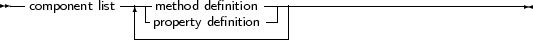

As of version 1.1, FPC supports interfaces. Interfaces are an alternative to multiple inheritance (where a class can have multiple parent classes) as implemented for instance in C++. An interface is basically a named set of methods and properties: A class that implements the interface provides all the methods as they are enumerated in the Interface definition. It is not possible for a class to implement only part of the interface: it is all or nothing.
Interfaces can also be ordered in a hierarchy, exactly as classes: An interface definition that inherits from another interface definition contains all the methods from the parent interface, as well as the methods explicitly named in the interface definition. A class implementing an interface must then implement all members of the interface as well as the methods of the parent interface(s).
An interface can be uniquely identified by a GUID. GUID is an acronym for Globally Unique Identifier, a 128-bit integer guaranteed always to be unique1 . Especially on Windows systems, the GUID of an interface can and must be used when using COM.
The definition of an Interface has the following form:
_________________________________________________________________________________________________________Interface type

___________________________________________________________________
Along with this definition the following must be noted:
The following are examples of interfaces:
IUnknown = interface [’{00000000-0000-0000-C000-000000000046}’]
function QueryInterface(const iid : tguid;out obj) : longint; function _AddRef : longint; function _Release : longint; end; IInterface = IUnknown; IMyInterface = Interface Function MyFunc : Integer; Function MySecondFunc : Integer; end; |
As can be seen, the GUID identifying the interface is optional.